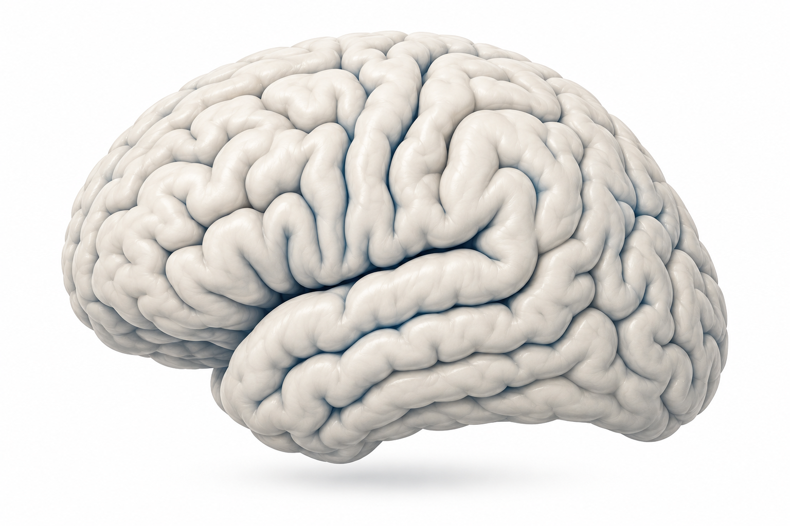
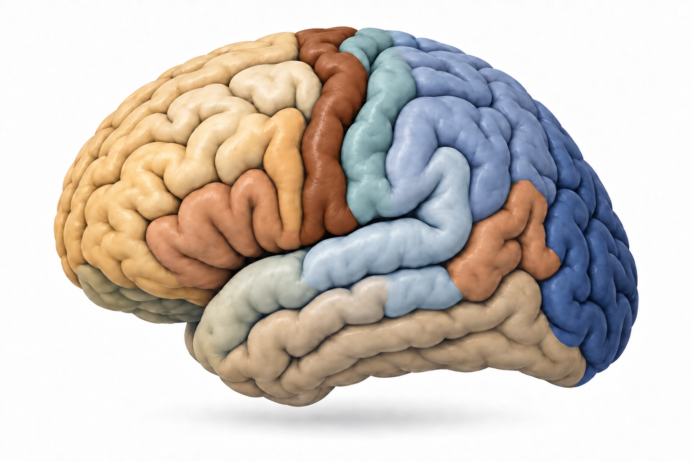
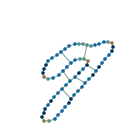
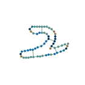
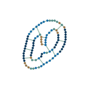
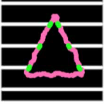
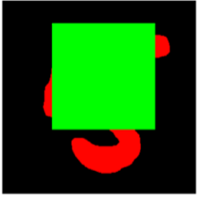
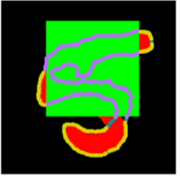
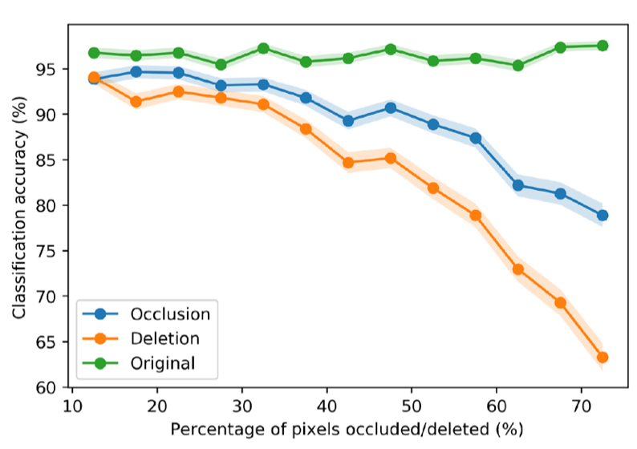

Introduction
Reverse engineering the neocortical microcircuit remains one of the 'holy grails' of neuroscience. Different regions of neocortex are implicated in a remarkably diverse set of mammalian cognitive functions, including planning, decision making, theory of mind, motor skills, language, problem solving, and every modality of perception. And yet, despite this diversity, its basic structure is surprisingly uniform.
This has led to the hypothesis that the neocortex contains a repeating columnar microcircuit, where the difference between any two regions emerges only from the difference in their inputs. If true, this would mean that the human neocortex contains a universal biological computation that can be repurposed to give rise to many of the elusive aspects of human intelligence. This hypothesis is particularly tantalizing because it suggests the possibility of simplifying the task of reverse engineering the human neocortex; instead of understanding a network of the many billions of neurons and trillions of synapses within the neocortex overall, we can instead reverse engineer only the comparably much smaller columnar microcircuit, containing fewer than a hundred thousand neurons.
01 / THE NEOCORTEX
One sheet of tissue. Many abilities.
The neocortex is the folded outer sheet of the brain. Its organization holds a clue to how it works.


Illustrative anatomy. Regions and circuit connections are schematic.
Successfully reverse engineering the neocortical microcircuit would simultaenously provide insight into the computational principles of human cognition, help us develop better brain-machine interfaces, guide the development of new treatments for brain disorders, and enable the design of energy- and data-efficient AI (the entire human brain runs on the ~same wattage as a single lightbulb!).
Despite fifty years since the microcircuit hypothesis was proposed, we still have not achieved the goal of reverse engineering its computations. One challenge is technological: we cannot yet measure and manipulate all the relevant neural components with sufficient precision to directly reverse engineer how it works. But on the other hand, neuroscientists have already collected an astronomical amount of data on the neocortex, and the limiting factor may not be acquiring more data, but instead integrating that data into a comprehensive computational theory. There are several such theories that have been proposed, including predictive coding, adaptive resonance theory, recursive cortical networks (RCN), and others.
RCN is unique in that it achieves three things at once: it provides a detailed computational account of the microcircuit, it provides a biologically plausible mapping to the known connectivity of neurons in the neocortex and thalamus, and also it--as a model on its own--performs well in practical settings where we should expect it to do well (such as solving Captcha's, a test to differentiate human perception from that of AI). The other theories struggle with the last of these goals, and perform poorly when tested in real world tasks that human's perform well in, which makes their account of the microcircuit less convincing.
The initial version of RCN, which we review here, focuses on modeling visual perception because that is the part of the neocortex scientists understand the best. In future work we aim to extend RCN to capture the more general principles of the neocortex and thereby apply it to other modalities of perception (see 'future directions').
RCN: A probabilistic graphical model for visual processing in the neocortical microcircuit
Before we look inside RCN to see how it works, we first describe a simple case of what it does. Suppose we want to train RCN to recognize handwritten digits. In RCN, this involves two processes: learning from examples, and inference on novel images.
During learning, each training image produces an exemplar—a graph of landmarks and the constraints. Learning this representation does not require a label. More images add more exemplars.
During inference, RCN receives a new image and answers the question: which learned exemplar best explains this input image? Loopy belief propagation helps evaluate candidate exemplars, allowing their shapes to vary.
If you are unfamiliar with probabilistic graphical models and belief propagation, see the friendly primer in the appendix.)



RCN can recognize images from remarkably few examples. In a one-shot MNIST experiment, RCN achieved 76.6% accuracy with just one training example per digit—10 total—versus 54.2% for the ImageNet-pretrained VGG-fc6 baseline. It also solved 66.6% of the tested text reCAPTCHAs using only five clean training examples per character. Unlike modern AI systems, which require large amounts of data to learn even simple tasks, mammals learn rapidly from remarkablely few examples. RCN provides an computational account of how this might work.
How RCN learns a new exemplar
Let’s begin by walking through the first of these two processes: learning a new exemplar. Suppose we start with a grayscale image of a handwritten 0, resized and padded to 200 × 200 pixels, represented by . RCN first preprocesses this image using a bank of 16 oriented filters, producing edge-response maps . Each filter responds to a particular edge direction and contrast polarity. To sharpen these responses into contours, RCN suppresses weaker neighboring responses, selects the strongest orientation at each location, and applies a threshold. The result is an array , where +1 marks a surviving edge fragment and −1 marks background. In the example in Figure 4, just 443 entries mark edge fragments.
To save this image as an exemplar, RCN extracts two things from the edge-fragment map. First, it selects a sparse set of landmarks, suppressing a small neighborhood around each selection to avoid keeping redundant nearby fragments. Each landmark stores its filter index and position: . Second, it adds lateral constraints between landmarks, preserving their relative positions while allowing some deformation during recognition. Each connection is stored as , where specifies how much the relative position of landmarks and can change. Together, the landmarks and connections form the graph saved for this contour exemplar: . Figure 4 walks through each step.
One MNIST image · a handwritten 0
Start with one handwritten 0
This is one image from MNIST. We will turn this particular example into a representation of its shape.
One training image. One example of a zero.
This is the key idea: one training image gives us one learned exemplar and the learned exemplar is a graph of landmarks and lateral constraints between these landmarks. Its landmarks remember which edge features appeared where, and its lateral factors describe how their relative positions may vary.
To better generalize to different ways of writing a zero, we can add more zero exemplars. To represent the other MNIST digits, we build exemplars from their labeled images too. The learned RCN model becomes a collection of these learned graphs.
How RCN recognizes a new image of a learned digit
Now let’s show the model a different image of a handwritten 0. Its edges are not in exactly the same places as the zero we learned. Can that stored exemplar still recognize this new image?
The image first passes through the same edge detectors. Each landmark in a stored exemplar then looks for evidence of its edge feature within a small neighborhood—a pool of possible positions. The landmarks can move, but their connections constrain how they move relative to one another. Evidence travels up the contour hierarchy, from local edges toward a score for the whole exemplar. The 'score' for an examplar is the number of landmarks that it can match to the input image minus the number it cannot. After this 'forward pass' through the model, there is a separate 'backward pass' that helps improve the selection of exemplars when there are multiple competing possible explanations. We focus first on the forward pass and then in section 2.4 discuss the backwards pass.
The lateral flexibility is controlled by (rho), the tolerance saved for a connection between landmarks and . If and are landmark ’s row and column shifts from its learned position, the lateral factor allows a pair of placements only when:
In other words, the two landmarks can move together, but their shifts cannot differ by more than pixels in either direction. A larger tolerance allows more deformation; zero preserves their relative position.
In this two-level implementation, the forward pass combines that evidence using a tree approximation of the lateral connections. It finds the best compatible placement of the landmarks on that tree and scores each exemplar. For our new zero, a zero exemplar comes out on top—even though the model has never seen this particular image before.
The RCN Factor Graph
This process of (a) learning a new exemplar and then (b) using these exemplars to explain a novel image, can both be described with a factor graph (for a review of probabilistic graphical models and factor graphs, see friendly primer in appendix).
The bottom of the factor graph contains variable nodes for each edge feature and each location (so 16x200x200 variable nodes), each paired with its own 'OR factor node' above it. An OR factor node performs the OR operation, stipulating that if its bottom's up input is '1', than at least one of the top down variable nodes should also be '1'. So when belief propogation occurs, if its edge factor variable node is "1", then it sends a message of '1' to every top down message it is connected to (since any one of them could explain the input).
These OR factor nodes are shared by the entire graph, above them are landmark variable nodes, which are unique for each examplar. The landmark variable nodes connect to all of the edge factors within a 25x25 range of it's location in pixel space, as well as to nearby landmark nodes, through a lateral factor node, which implements a distance constraint (if any distance is above the threshold the lateral factor node sends a message of X). The landmark vriable nodes then connext to one AND factor node, which then connects to a variable node representing its exemplar. This factor graph is shown in figure 6 below.
When learning a new exemplar, the 'processing' of the exemplar is the process of constructing these landmark variable nodes and their lateral connections. The process of the forward pass over the model, is propgoating beliefs forward from the edge variable nodes at the bottom, collecting evidence, propogating laterally throughout the landmark variable nodes, and then collecting evidence up at the examplar's variable nodes. Click "run forward pass" in figure 6 to see it happen in action.
This is already enough to recognize our new zero. But a high forward score is only a promising explanation: the more ambiguous scene in section 2.4 below will let us see why backward inference and loopy belief propagation matter.
The Backward Pass
The forward pass asks how well each exemplar matches the image on its own. But several plausible exemplars can claim the same evidence. To decide which objects are actually present, they must exchange messages about which parts of the image they can explain together.
Consider the image shown in figure 7 below, along with the three learned examplers: '7', 'T' and 'Bar'. This input image is ambiguous but is best explained by a T right next to a 7. But the problem is that every single pixel of 'Bar' is also present in this image. And there are more pixels associate with 'Bar' than '7' or 'T'. So after the forward pass RCN will accumulate more evidence for 'Bar' than for '7' or 'T'. But the explanation of bar is not as good as one as predicting the image contains a T and a 7: choosing 'bar' leaves both lower strokes unexplained. The way that RCN disambiguates this scene is through the backward pass.
The backward pass occurs naturally within RCN becuase RCN is a probabilistic graphical model, so afte rthe forward pass accumulates evidence at the exemplars, then we can use loopy belief propogation (max-product messages) with damping to let messages pass between landmark variables, lateral factor nodes, and the exemplar's AND factor node and variable nodes, until evidence settles. Althought this is not theoretically guaranteed to settle on the correct solution, with the appropriate damping it is shown empirically to work well.
The backward messages let these explanations interact. Evidence for the T’s stem and the 7’s diagonal travels upward. Each hypothesis then sends support back down to the OR factors it shares with the bar. An OR factor asks whether another cause can already explain its cell; if so, that cell contributes less support to the redundant hypothesis. Repeated upward and downward exchanges let the whole explanation settle.
This allows RCN to implement the effect of explaining away. The OR factor nodes zero out their messages to top down landmark nodes if another landmark node already explains it (as an OR factor, once one variable node is on, it means there is no additional evidence to pass to the other variable node).
Extending the RCN factor graph
Our walkthrough focuses on a two-level contour model. Full RCN can extend this into a hierarchy of reusable features, combining edges into corners, parts, and objects. It also couples the contours to a surface-appearance canvas—a conditional random field that represents properties such as color and texture within boundaries. Together, these components let shape and appearance inform one another and support recognition, segmentation, and reasoning about occlusion. We leave these extensions out of the walkthrough; see George et al. (2017), Figs. 2–3 and supplementary methods, for the full model.
Results
If RCN is meant to capture aspects of visual processing in humans, then it should be able to solve visual tasks that humans can solve, and should exhibit similar visual phenomena known to exist in human visual percetion.
The paper’s CAPTCHA experiments offer a clear test of performance and data efficiency on a real-world task. Text-based CAPTCHAs are images of distorted, crowded, or overlapping letters and numbers that websites ask people to read to help distinguish human visitors from automated programs.[1]
RCN and the CNN baseline both read about 90% of the synthetic CAPTCHA strings correctly—but learned from very different amounts and kinds of data. RCN used 260 clean images of individual characters. The CNN learned from 79,000 complete CAPTCHA strings, with translations producing more than 2.3 million distinct training images. RCN’s characters could then be combined at inference time, rather than learning every combination as another training example.
The CNN’s 79,000 strings became over 2.3 million translated training images. Clean characters and full strings are different training units; the horizontal axis uses a logarithmic scale.
The stronger test was changing the images after training. Increasing the spacing between characters by just 15% reduced the CNN’s whole-string accuracy from 89.9% to 38.4%; RCN’s rose from 90.4% to 94.3%. This is the kind of flexibility the model was built to provide: a learned character is a shape that can participate in a new scene, not a fixed position in a memorized string.
In Fig. 10, explore precomputed digit CAPTCHA examples from an RCN model that has learned only 100 exemplars—ten per digit. Refresh the CAPTCHA to cycle through fifteen selected examples that the model recognized correctly.
Loading recorded example…
Explaining Perceptual Phenomena in Human Vision
Human vision does more than detect the edges present in an image: it infers the shapes that could explain them. RCN reproduces several perceptual effects that arise from this process. Here we review two examples: seeing illusory contours where no edge is drawn, and distinguishing parts of an object that are hidden from parts that are simply missing.
Seeing a contour that isn’t drawn
Our visual system often perceives a continuous boundary even where there is no local edge (see figure 11 below). RCN does something similar: a shape hypothesis supported by the surrounding image sends feedback that supports the missing parts of its contour. The paper also reports a delay in these inferred responses relative to the initial response to visible edges—a qualitative match to the biological observations discussed there.
Input image
RCN’s inferred contours

The magenta boundary belongs to the model’s explanation. It was not added to the input image.
Hidden is different from missing
The same visible fragments can be easier to recognize when something visibly covers the missing parts. RCN distinguishes these cases too. A foreground object can explain why a predicted contour is absent; without an occluder, its absence counts against the shape hypothesis. The visible portions of the digit below stay the same when the covering object is removed.
Model input

RCN’s explanation

The foreground square accounts for the absent strokes, allowing the model to support the partly hidden five.
Published MNIST recognition results

Mapping to Biology
One appealing property of RCN is that belief propagation works through local update rules: each node only needs the messages from its neighbors. In the contour model we have explored, much of the learned structure is captured by which connections exist. This offers a direct starting point for a biological implementation, without requiring the brain to use the end-to-end backpropagation that trains conventional artificial neural networks. There is one important difference, however: an edge in a factor graph carries messages both ways, while a neuronal axon carries signals in one direction. Bio-RCN implements these two directions with separate, parallel neural circuits. The thalamus also plays an active role, using cortical feedback to gate evidence and support explaining away. Figure 13 illustrates this proposed relationship; see George et al. (2025) for the full mapping.
The cortical microcircuit
Features at fixed positions · parent-specific populations
The RCN Factor Graph
Exemplars → landmark pools → shared edge features
Future directions
RCN is a compelling first step toward modeling the neocortex, but it is not yet complete. We want to extend it in several directions:
- Other senses. Extend the model beyond vision to somatosensation and audition, learning to recognize patterns in touch and sound.
- Time and sequence learning. These senses, as well as vision, unfold over time. We want to learn from sequences, potentially combining RCN with work on clone-structured cognitive graphs (CSCGs).
- Scale. Build larger hierarchies of reusable features and exemplars, and extend recognition to more complex, natural inputs.
- When to learn. Develop clearer novelty-detection rules for deciding when existing exemplars explain an observation well enough, and when a new exemplar should be learned.
- Movement. Condition predictions on our movements, so the model can learn how looking around or moving a hand changes what we see and feel.
References
- George et al. (2017). A generative vision model that trains with high data efficiency and breaks text-based CAPTCHAs. Science.
- George et al. (2025). A detailed theory of thalamic and cortical microcircuits for predictive visual inference. Science Advances.
Appendix
Primer on Probabilistic Graphical Models
A probabilistic graphical model is a tool for making inferences on a joint probability distribution. When we say “inferences,” we merely mean: given some observations about some things, what can we say (i.e. “infer”) about the values of other things, given the joint probability distribution between all the things?
As a quick primer on probabilistic graphical models, let’s consider the presence of a disease , given some observed symptoms . We use when the disease is present and when symptom i is present, and 0 otherwise.
Suppose we are given a dataset of patients, recording whether each of 8 symptoms was present and whether the patient had the disease. Each patient therefore gives us a value for each of 9 variables, . We want to use this dataset to learn their joint probability distribution, , so that we can observe a new patient’s symptoms and infer the probability that they have the disease:
The problem is that with 8 binary symptoms there are 256 different combinations. To estimate the probability of disease for any given symptom combination directly from the data, we would need many patients with exactly that combination, along with their disease status.
However, this inference problem becomes much easier if the symptoms have a simpler pattern of conditional dependencies. For example, suppose the disease increases the probability of having a fever () and cough (), and the remaining symptoms fall into two groups: (chills, sweating, and headache) depend only on fever, while (insomnia, nausea, and chest pain) depend only on cough. If fever and cough are independent given the disease, and these six signs are independent given fever and cough, we can factorize the joint distribution:
Factorizing means writing the joint probability distribution as a product of smaller factors. Each factor above is a small probability table. Under these assumptions, a joint table with 512 entries—one for each combination of symptoms and disease status—can be described by just 17 independent probabilities: one for disease and two per symptom. We can learn each local relationship from patients with different overall symptom patterns, allowing us to learn the distribution with much less data.
A factor graph is a type of probabilistic graphical model that makes this factorization visible: circles are variables, squares are factors, and each square connects to the variables in its probability table.
Factor Graph
Each square connects the variables that appear together in one factor.
Hover over a square to see its probability table.
Suppose we observe that a patient has a fever and chest pain, but know nothing about their other symptoms. How can we calculate the probability of disease? Message passing breaks this inference into small, local calculations. Each message summarizes the evidence coming from one part of the graph. We pass these summaries toward the disease variable, combine them, and normalize the result.
Belief Propagation
Fever and chest pain are observed. Gather their evidence toward disease.
Observe fever and chest pain
We observe fever and chest pain, so those variables are fixed to 1. The other symptoms are unknown. We want to infer whether the patient has the disease.
The highlighted observations are the evidence we will pass through the graph.
Hover over the highlighted arrow for the calculation, or its factor for the probability table.
The name sum-product describes these two operations: sum over possibilities for an unknown variable, and multiply the independent contributions that meet at a variable. When sending a message, we leave out the message arriving from its recipient, so evidence is not immediately sent back to where it came from. On this tree, one inward pass is enough to compute the exact disease probability.
What changes when the graph has a loop?
In a graph with a loop, evidence can travel along several paths and return to where it started. Let’s observe B = 1 and ask: what is the probability that A = 1? A and two unknown binary variables, X₁ and X₂, form a triangle. B is attached to X₂.
Each square describes a local relationship between two variables. Consider one square on its own: soft equality makes (0,0) and (1,1) more likely than (0,1) or (1,0), while soft XOR makes (0,1) and (1,0) more likely than (0,0) or (1,1). “Soft” means the other combinations remain possible. The blue equality factor therefore lets B = 1 provide evidence for X₂ = 1.
These relationships create competing evidence. If X₂ is 1, the direct connection supports A = 0. But the other path supports X₁ = 0, which in turn supports A = 1. Three binary variables cannot all be opposite to one another.
All messages start neutral, so A initially has an estimate of 50%. As B’s evidence circulates, the estimates oscillate. In this example, ordinary updates eventually settle, but very slowly. Damping softens the updates by keeping some of each previous message:
Damping for Loopy Graphs
Circle percentages are variable estimates; arrow percentages are individual messages. Hover a circle to inspect its received messages, an arrow to see the next message, or a square to see its factor table. Message superscripts mark the round they are received. B stays fixed at 100%.
Slide the round control to see values at different rounds.
What exactly are the factors and probabilities?
All four variables are binary. B is fixed to 1; the others have uniform priors. The A–X₁ and X₁–X₂ factors assign weight 0.999 to different values and 0.001 to matching values. The A–X₂ factor is slightly weaker: 0.998 for different values and 0.002 for matching values. The factors are soft: every assignment with B = 1 has positive probability.
The blue B–X₂ factor assigns weight 0.9 to matching values and 0.1 to different values. Equality is also called XNOR. It differs from AND because (0,0) and (1,1) both receive high weight.
| Pair of values | XOR: A–X₁, X₁–X₂ | XOR: A–X₂ | Soft equality |
|---|---|---|---|
| (0, 0) | 0.001 | 0.002 | 0.9 |
| (0, 1) | 0.999 | 0.998 | 0.1 |
| (1, 0) | 0.999 | 0.998 | 0.1 |
| (1, 1) | 0.001 | 0.002 | 0.9 |
A weight is a nonnegative number that determines a combination’s relative contribution to the joint probability. Higher weights increase that contribution when the factors are multiplied. A factor need not sum to one, so it is not necessarily a probability distribution by itself. The hover tables show these relationships row by row: given one variable’s value, soft XOR assigns 99.9% to the opposite value and 0.1% to the same value (99.8% and 0.2% for A–X₂); soft equality assigns 90% to the same value and 10% to the opposite value. These are local relationships; probabilities in the full graph also depend on the other factors.
To obtain the full joint distribution, multiply all the factors and normalize. To condition on B = 1, retain only assignments with B = 1 and normalize again.
Each round updates every directed message from the previous round’s messages. A message to a neighbor excludes the message received from that neighbor. We normalize each proposal, then blend it with the old normalized message using λ.
Enumerating all 8 assignments of the three unknown variables gives P(A = 1 | B = 1) ≈ 50.02%. With moderate damping, BP settles near 50.0001%, about 0.02 percentage points from the exact answer. Undamped BP approaches that same fixed point much more slowly; the 40-round plot shows its long oscillatory transient. The estimate for A is close here, but loopy BP remains approximate. Damping stabilizes the updates; it does not guarantee exact probabilities for every variable.